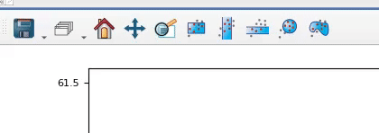

glue-plotly

glue-plotly is a plugin for the glue visualization software which connects glue to Plotly. This consists of two main pieces of functionality:
Export glue viewers directly to interactive Plotly HTML pages. Exported HTML is completely standalone and can be used with any static file hosting service, to allow easily sharing interactive figures with your audience.
Two experimental Plotly-powered viewers which can be used with glue-jupyter: a scatter viewer and a histogram viewer. See the examples below for guidance on how to use these in your project.
glue-plotly is installable via pip via the command below. Once installed, see the following sections for information on how to access the exporters and viewers.
pip install glue-plotly
For developers, you can find the source code on our GitHub repository.
The HTML exporters are exposed as viewer tools in both the Qt and Jupyter versions of glue.
For Qt glue, the exporters are located in the "save" tool menu:
The Jupyter glue viewers don't yet support subtools, so the Plotly exporters are top-level tools in the toolbar:
HTML export is supported for a variety of glue viewers:
The examples below are all interactive Plotly graphs that were exported directly from glue! Each graph is labeled with the glue viewer that it was exported from.
glue-plotly contains two experimental Plotly-powered viewers for use with glue-jupyter: a scatter viewer and a histogram viewer. If you're working with integral data, we also provide the ability to visualize histograms as dotplots.
For examples of using these, see this notebook, which demonstrates necessary imports, viewer creation, and manipulating viewer options.